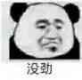
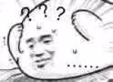
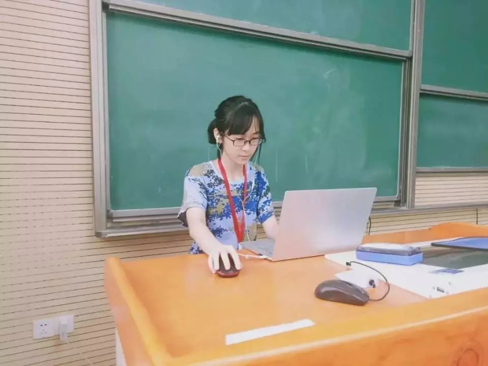
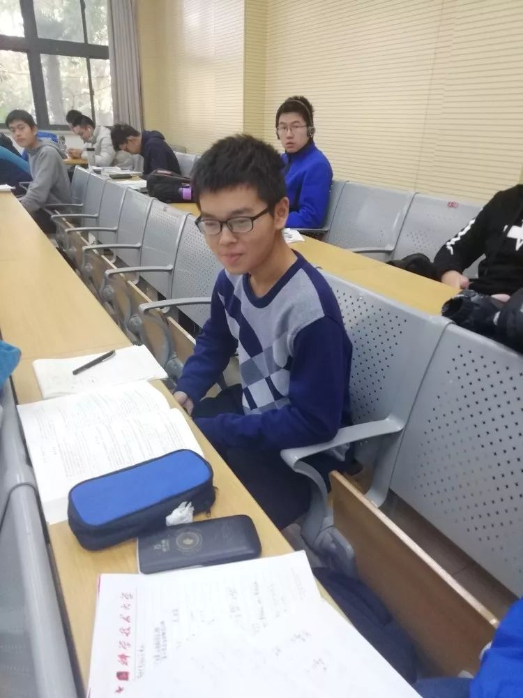
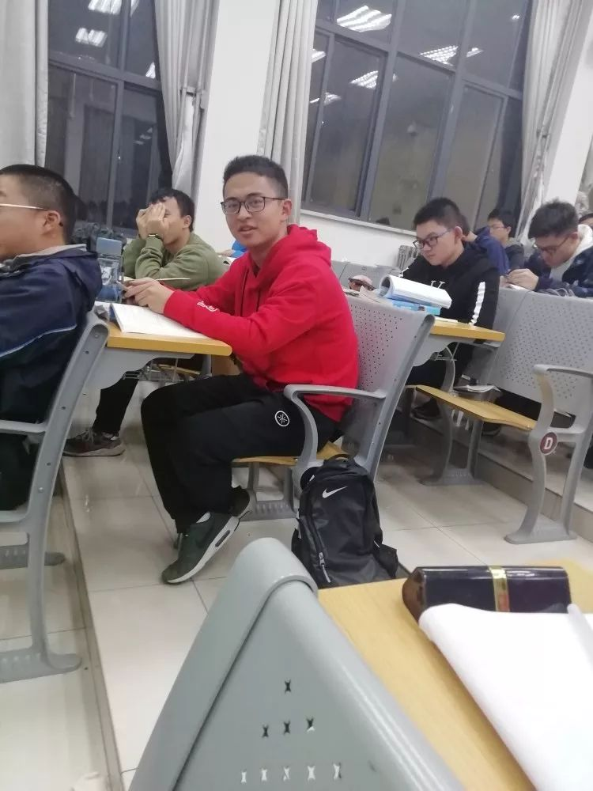
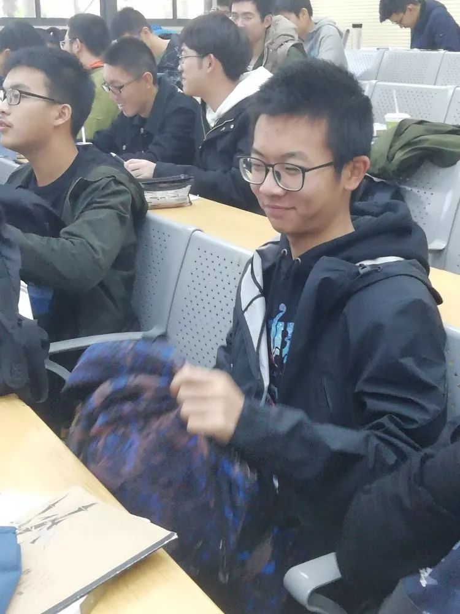

发布时间:2018-12-20 作者:中国科大少年班学院学生会
辩论赛——人生路上拿得起/放得下更难


让我们先来介绍双方辩手。
正方一辩邱子悦，二辩耿子介，他们的持方是“人生路上拿得起更难”。

反方一辩赵瑞，二辩王睿，他们的持方是“人生路上放得下更难”。

看到这里相信大家内心：

文章末尾有辩手们的生活照喔~不妨看下去吧！

20:00，主席李岩松宣布比赛开始，由正方开篇立论。正方提出四个定义（“拿得起”主观上敢于承担责任的态度，并且在客观上有能力做到的过程，“放得下”是主观上不执著于得失、看淡、释然的态度；理智、公平为基础，经过慎重考虑之后决定的；与生俱来的劣根性不应该在今天的讨论范围内；排除“放下亲情”这类人们主观不愿意做而使得“放下”很困难的情况）和两个论点：更需要社会责任与勇气、更需要能力。
很遗憾的是，由于念得太快并且说明性占比过大，正方的立论接受性较差，反方和评委都没有听清楚，希望正方两位辩手吸取教训啦~

接下来反二王睿大佬的质询环节就非常优秀了。在质询正方对于本辩题的判准之后，通过“让木工修理电机”这个例子，论述拿得起的难度是因人而异的，顺利提出反方的判准：从拿不起到拿得起，从放不下到放得下，哪个更难。
反一立论则更全面地阐述了反方观点：反方认为，本辩题的“拿得起”和“放得下”是抽象化、心理上的“拿得起”和“放得下”。同时，反一明确了“放下不等于放弃”这一共识。之后关于人天性渴望拥有，即所谓“完成欲”的理论，支持了“放下要克服天性所以难”的论点。
正二质询的质询环节可以说很有趣了。通过叫爸爸的例子，说明一件事情如果是因为不想做而显得难，不能说这件事情本身难。通过考南翔、举重物的例子，解释了“拿得起的判准是成功”。
Emmmm如果没有发现什么不对，不妨倒回去找找——
3——
2——
1——
没错——这里我将复盘正二举出“叫爸爸”的例子的原文：
耿子介：“我将举出一个很贴切的例子，如果你想要我叫你爸爸，但是我不愿意叫，能不能说明我叫你爸爸很难？”
（一脸懵逼的）赵瑞：“我觉得很难。就是很难啊——你想，你叫我爸爸这件事情很容易吗？你要克服你心理的障碍——”
耿子介：“赵瑞爸爸，王睿爸爸，在座的评委爸爸，我觉得这很容易，（认为它难）只是（因为）我不愿意做。”
（在此表扬为了辩题做出巨大牺牲的耿姓同学）
正二接下来的申论为他在质询环节的内容做出了进一步解释：不愿意放下不代表很难，解决办法是时间和新欢——在这两个解决办法面前，放下没有那么难。拿起需要勇气，还面对未知的风险和挑战（玫瑰的刺的例子）。拿起更需要能力（诸葛亮的例子），拿起要有逆天改命的魄力。
反一质询环节双方继续纠缠，达成了“拿起重物不在讨论范围内”的共识。
反二申论环节大致提出了4个点：1.正方要求理智考虑是很不现实的，仇杀、情杀这类由于失去理智而造成的情况不少见。2.应征入伍里究竟热爱祖国更多还是热爱生命更多？拿起不难，威逼利诱就行了。3.没有多少人能真正放下。4.勿忘国耻这个例子并不能支持正方论点——“勿忘国耻”不也可以解释为放下国耻很难吗？（在此膜一下把申论打成质询的王睿大佬）

惊险刺激的自由辩环节，双方又针对场面提出了一些反驳：反方强调了本辩题是“人生路上”，那么判准不能只是一件事情的“拿起”或“放下”。同时，反方还对于正方做的分割“不愿意做不代表难”做了回应，即“不愿意也是一种难”。针对正方提出的“未知性”，反方回应“社会责任绝大多数不是未知的，绝大多数人的生活有规律可循”。正方则进一步提出，想比拿起，放下之后的没有太多未知和风险。
反方结辩时遗憾地表示自己论没推完。反一重申了判准，用佛理和诗句展现“放下难”，用一个朋友的故事作结，体现“放下”的价值。
正方结辩重申了“风险随着拿起过程而产生，而克服恐惧需要勇气”这一内在逻辑。最后的相声虽然僵硬，但算是我们积分赛相声环节的零的突破~

先公布赛果，正方：反方为5:4，正方胜出。最佳辩手是反方二辩王睿同学。
三位评委十分认真地点评了比赛。他们总结如下：正方以客观地角度论证，而反方以主观的视角论证。正反双方的例子使用都不够合适。正方强调的“客观限制”、举出的“时间和新欢”的解决办法都不错，在回应上做的更好，但是四个定义切割了太多没必要的东西。评委们肯定了反方提出的“困难因人而异”、“ 放得下也需要勇气，对于社会责任的承担是差不多的”的点。
最后，时成帅学长对于两个点提出了具体的建议：正方可以说拿得起亲情也难，初为人父、初为人母心态上转变也是困难的；对于正方提出“未知的风险”，反方可以和正方探讨“已知和未知真的有优劣吗”而非承认已知不如未知困难。

相信大家已经等不及看选手们的帅照啦~




这一场比赛的意义，并不在于分出胜负、分出究竟“拿得起”更难还是“放得下”更难，而是引导辩手们、观众们思考人生路上“拿起”和“放下”这两种选择。
最后，我想起之前有人说：“辩论不过奇技淫巧。”而我认为，辩论并不是奇技淫巧，更不是为了说服别人。
辩论是手段而非目的。对于那些平时我们也许不会深究的问题，在辩论中，我们逼迫自己去思考不同方向的两个观点的合理性和片面性，逼迫自己打破思维局限性。哪怕我们只逆自己思维的反面走了几步，我们也在辩论中探索了思维、拓展了知识的宽度，让更深入的思考、更有价值的想法能传播、发扬。这才是辩论的真正意义。
希望大家在人生路上能勇于拿起，也能轻松放下。